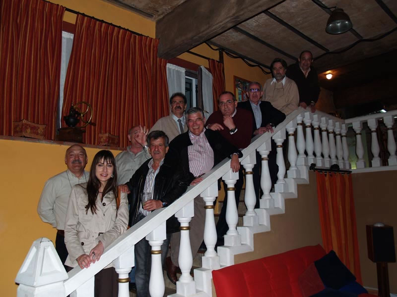

Encuentro en SantoñaAnterior | Inicio | Siguiente |
|
 Mirad, mirad que caras.... Se les acabó el aburrimiento. Ahí estamos todos tan contentos y felices. Bueno, salgo yo en la foto porque la hizo Raúl, el novio de Belinda. Recordemos al personal: Wetomaster, Belinda, Manolo, Jesús, Enrique, Carlos, Joaquín, Jaime, Manolo y Fernando. Por cierto, ya no esta Carlos Bitaubé, pues después de la comida, marchóse a Madrid, ya que tenía unos compromisos que le reclamaban su presencia al día siguiente. |